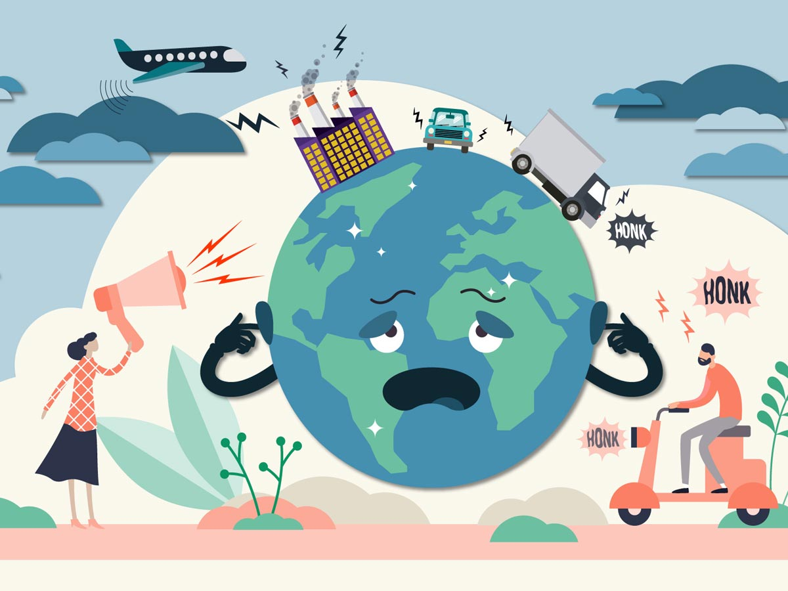

Noise pollution is an invisible danger. It cannot be seen, but it is present nonetheless, both on land and under the sea. Noise pollution is considered to be any unwanted or disturbing sound that affects the health and well-being of humans and other organisms.
Sound is measured in decibels. There are many sounds in the environment, from rustling leaves (20 to 30 decibels) to a thunderclap (120 decibels) to the wail of a siren (120 to 140 decibels). Sounds that reach 85 decibels or higher can harm a person's ears. Sound sources that exceed this threshold include familiar things, such as power lawn mowers (90 decibels), subway trains (90 to 115 decibels), and loud rock concerts (110 to 120 decibels).
Noise pollution impacts millions of people on a daily basis. The most common health problem it causes is Noise Induced Hearing Loss (NIHL). Exposure to loud noise can also cause high blood pressure, heart disease, sleep disturbances, and stress. These health problems can affect all age groups, especially children. Many children who live near noisy airports or streets have been found to suffer from stress and other problems, such as impairments in memory, attention level, and reading skill.
Noise pollution also impacts the health and well-being of wildlife. Studies have shown that loud noises can cause caterpillars' dorsal vessels (the insect equivalent of a heart) to beat faster, and cause bluebirds to have fewer chicks. Animals use sound for a variety of reasons, including to navigate, find food, attract mates, and avoid predators. Noise pollution makes it difficult for them to accomplish these tasks, which affects their ability survive.
Increasing noise is not only affecting animals on land, it is also a growing problem for those that live in the ocean. Ships, oil drills, sonar devices, and seismic tests have made the once tranquil marine environment loud and chaotic. Whales and dolphins are particularly impacted by noise pollution. These marine mammals rely on echolocation to communicate, navigate, feed, and find mates, and excess noise interferes with their ability to effectively echolocate.

Some of the loudest underwater noise comes from naval sonar devices. Sonar, like echolocation, works by sending pulses of sound down into the depths of the ocean to bounce off an object and return an echo to the ship, which indicates a location for object. Sonar sounds can be as loud as 235 decibels and travel hundreds of miles under water, interfering with whale's ability to use echolocation. Research has shown that sonar can cause mass strandings of whales on beaches and alter the feeding behavior of endangered blue whales (Balaenoptera musculus). Environmental groups are urging the U.S. Navy to stop or reduce using sonar for military training.
Seismic surveys also produce loud blasts of sound within the ocean. Ships looking for deep-sea oil or gas deposits tow devices called air guns and shoot pulses of sound down to the ocean floor. The sound blasts can damage the ears of marine animals and cause serious injury. Scientists believe this noise may also be contributing to the altered behavior of whales.
Among those researching the effects of noise pollution is Michel Andre, a bioacoustics researcher in Spain who is recording ocean sounds using instruments called hydrophones. His project, LIDO (Listening to the Deep Ocean Environment), collects data at 22 different locations. Back in the lab, computers identify the sounds of human activities as well as 26 species of whales and dolphins. The analysis aims to determine the effects that underwater noise is having on these animals. Andre hopes his project will find ways to protect marine animals from the dangers of ocean noise